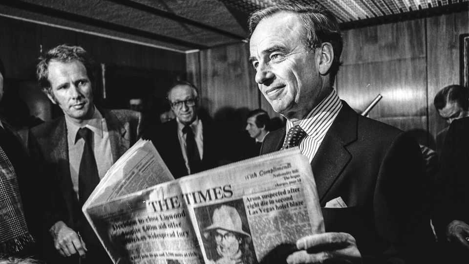

Culture | Bossy Aussie

What turned Rupert Murdoch into the terror of Fleet Street, scourge of the American airwaves, maker and breaker of prime ministers and presidents? It may have been an incident 90-odd years ago on a cruise ship somewhere between Australia and Europe. Lady Elisabeth Murdoch, his formidable mother, decided that it was time young Rupert learned to swim. So she took him to the pool—and tossed him in. “I had to dog-paddle to the side, and I was screaming,” Mr Murdoch later recounted.
To understand the world’s most powerful news machine and its complicated, irascible mastermind, you have to understand the family behind them, argues Gabriel Sherman, a journalist who wrote “The Apprentice”, a scathing film about Donald Trump. As Mr Murdoch nears his 95th birthday and the question of succession looms, Mr Sherman has written a family saga that gallops through 100 years of history in around 200 lively pages.
The pool incident took place on a ship bound for England, where Sir Keith Murdoch, Rupert’s distant father, began his own newspaper career under Lord Northcliffe of the Daily Mail. The key ingredients of news, Northcliffe declared, were “health things, sex things, money things”. Applying these lessons in Australia, Sir Keith built a newspaper chain that provided Rupert with a fancy childhood home, a Shetland pony called Joy Boy and early brushes with power, including meeting President Harry Truman and Arthur Sulzberger of the New York Times. But when Sir Keith died, aged just 67, Lady Elisabeth sold many of his assets to cover debts, and the Murdoch empire was greatly reduced.
In the subsequent decades Mr Murdoch built it back up—and then some. In Australia he gleefully acquired rivals; in Britain he began with the Sun, before shocking the establishment with his takeover of the august Times. In America he took control of 20th Century Fox before selling most of it to Disney for $71bn in 2019, at the top of the market for media. Today his remaining newspaper and TV assets—including the ever influential Fox News, which Mr Trump watches obsessively—are worth a combined $40bn.
They pack an editorial punch like no other. “I didn’t come all the way from Australia not to interfere,” Mr Murdoch told one of his editors. He employed “telephone terrorism”, calling staff day or night and firing off faxes from his yacht. Jet-lag, combined with the “angry pills” of temazepam he took to combat it, did nothing for his patience. To survive, executives built their coverage around his prejudices without instructions being spelled out directly. This “anticipatory compliance”, as one underling describes it, has insulated Mr Murdoch from scandals that have hit his titles, such as when the News of the World was shut down over illegal phone-hacking.
Mr Murdoch’s worldview is faithfully projected by his papers and by Fox News. But he has changed his politics over the years. In his surprisingly lefty student days he was known as Red Rupe and kept a bust of Lenin in his room at Oxford. The Sun flipped from Margaret Thatcher to Tony Blair to David Cameron and back to Sir Keir Starmer: more of a political weathervane than a signpost. Mr Murdoch held a fund-raiser for Hillary Clinton in 2007, later backing Mr Trump, with whom he has had a fraught relationship.
The one constant is a transactional view of power. After Mr Murdoch’s New York Post backed Ed Koch for mayor, he lifted a ban on the paper’s delivery trucks using city highways. To get into China, coverage was censored at his Star Television Network, and his publisher, HarperCollins, spiked a critical book by Chris Patten, a former governor of Hong Kong.
He seems to identify most strongly as an outsider, never happier than when fighting obstacles. British elites dubbed him a “dirty digger”. Yet his Sun and News of the World—stuffed with health things, sex things, money things—thrived against their dull competitors. The ferocious Fox tore up a cosy Hollywood where executives enjoyed nine-course board lunches. Anti-elitism was sometimes a figleaf for bad behaviour, however. After the Sunday Times published “Hitler’s diaries”—fake, it turned out—Mr Murdoch shrugged: “We are in the entertainment business.”
As he has aged, the question of succession has come into focus, heightened by a HBO drama that appears to be largely based on the family. (Mr Murdoch’s divorce settlement with Jerry Hall, his fourth wife, included a clause forbidding her from talking to the show’s writers.) HBO was not the first to fictionalise the feuding family. Mr Murdoch’s second wife, Anna, wrote a novel, “Family Business”, about a media dynasty that implodes when the father dies and his heirs fight. After a decades-long audition, Mr Murdoch has decided to pass the empire on to Lachlan, his eldest son, causing a rift with other siblings. For now, however, the proprietor is sticking to his promise that “My retirement plan is to be carried out of here.” He is still a regular, if somewhat hobbled presence, at the Fox lot in Century City.
Mr Sherman’s book draws on material already reported about the Murdochs, including Michael Wolff’s “The Man Who Owns the News” (2008), which got closer to the mogul than any other account. There are few new stories to be told. But it elegantly marks the end of the news-baron era. Most of Fox News’s competitors are owned by parent companies with much bigger interests than the news, from Disney (of ABC) and Paramount (CBS) to Warner Bros (CNN) and Comcast (NBC). Newspapers, meanwhile, are increasingly loss-making hobbies for unreliable billionaires, who view them either as philanthropic endeavours or political bargaining chips. (Jeff Bezos, owner of the Washington Post, has nothing approaching Mr Murdoch’s passion for newspapers. The paper recently announced it would lay off a third of its journalists to stem losses.)
Given media valuations today, it is hard to conceive that in the 1980s Mr Murdoch leveraged a newspaper fortune to buy a Hollywood studio. Now attention and power are shifting to platforms whose editorial line is dictated by algorithms rather than a bark down the telephone or furious fax from the yacht. For better or worse, Mr Murdoch is the last of his kind. ■
For more on the latest books, films, TV shows, albums and controversies, sign up to Plot Twist, our weekly subscriber-only newsletter